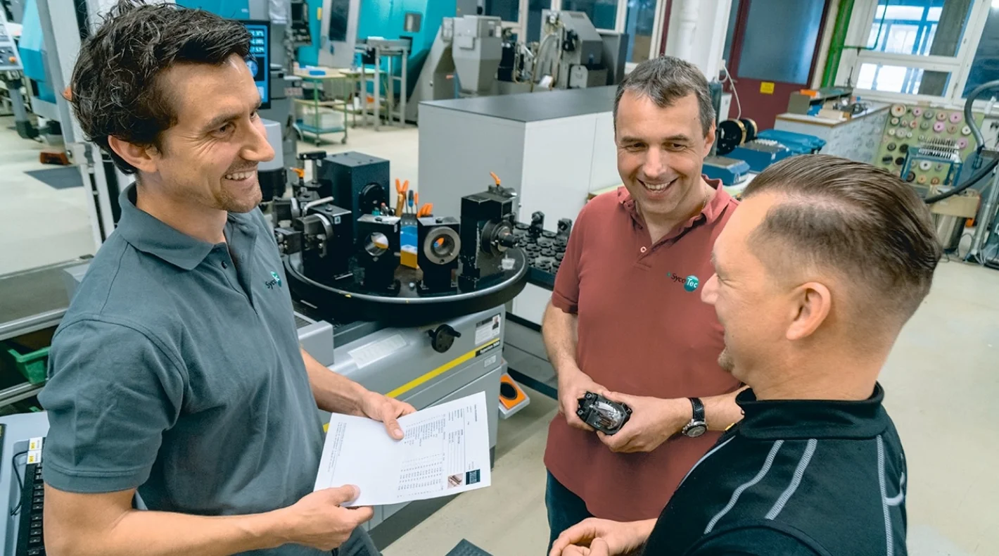

Eine besondere Herausforderung: die Mehrfach-Drehhalter
Die Lang- und Universaldrehmaschinen bei SycoTec werden sowohl mit angetriebenen Werkzeugen bestückt als auch mit stationären Drehwerkzeugen. Das Einstell- und Messgerät »hyperion« von ZOLLER verrichtet seinen Dienst in allen Bereichen − sowohl bei den Universaldrehmaschinen von Index als auch im Langdrehbereich mit Star-Maschinen. Gerade bei Letzteren kommen sehr häufig Mehrfach-Drehhalter zum Einsatz, die Platz für mehrere Drehwerkzeuge auf einem Halter bieten.
Filigrane Teile für die Dentaltechnik in kleiner bis mittlerer Losgröße
Betrachtet man das Handgerät eines Zahnarztes, lässt sich nur erahnen, wie klein die Motoren und Antriebseinheiten im Inneren des Geräts sein müssen, die bei Drehzahlwerten bis zu 500000 min-1 hochpräzise Arbeit leisten. Im idyllischen Leutkirch im Allgäu fertigt SycoTec unter anderem genau diese Teile und stößt dabei auf knifflige Herausforderungen. Allerdings fertigt das Unternehmen nicht nur filigrane Bauteile für die Dentaltechnik, sondern ist generell inzwischen einer der größten Anbieter von Hochgeschwindigkeitsantrieben weltweit. Der Geschäftsbereich umfasst ein breites Spektrum an maßgeschneiderten Elektroantrieben, Motorkomponenten bis hin zu Turbogeneratoren und Sondermotoren.
Auch das dritte Standbein, die “Components”, verlangt viel Know-how und Erfahrung. Sämtliche Technologien wie Fräsen, Drehen, Schleifen, Honen, Laserschweißen, Tiefziehen und Roboterschweißen stehen zur Verfügung. Das Handling der großen Vielfalt an statischen und rotierenden Werkzeugen, die auf den zahlreichen Werkzeugmaschinen zum Einsatz kommen, ist für SycoTec eine besonders große Herausforderung. Des Weiteren müssen filigrane Bauteile mit sehr geringen Toleranzen in kleinen bis mittleren Losgrößen gefertigt werden – und das gleichzeitig mit hoher Effizienz.
